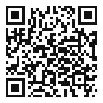
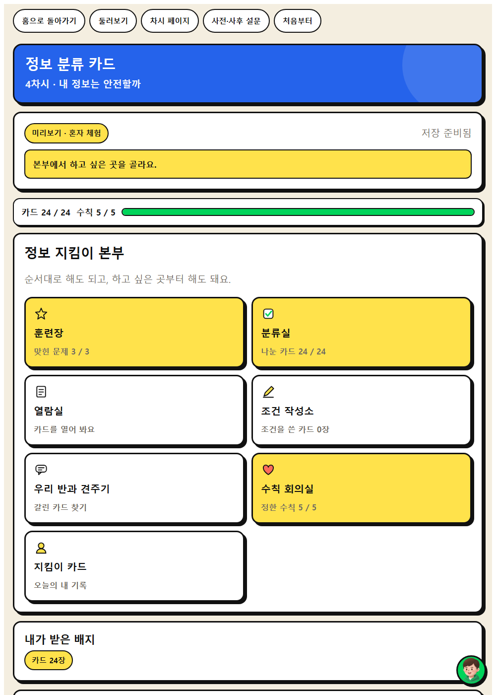
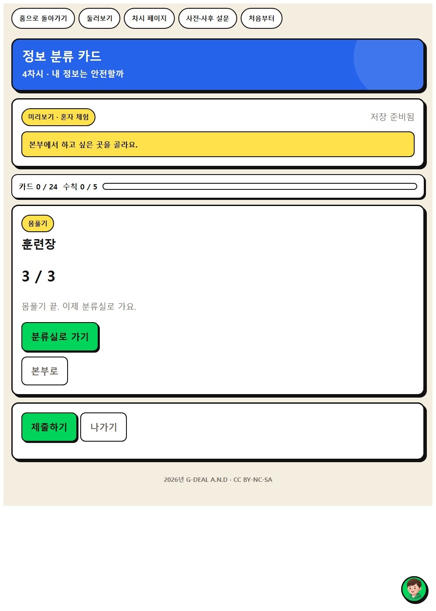
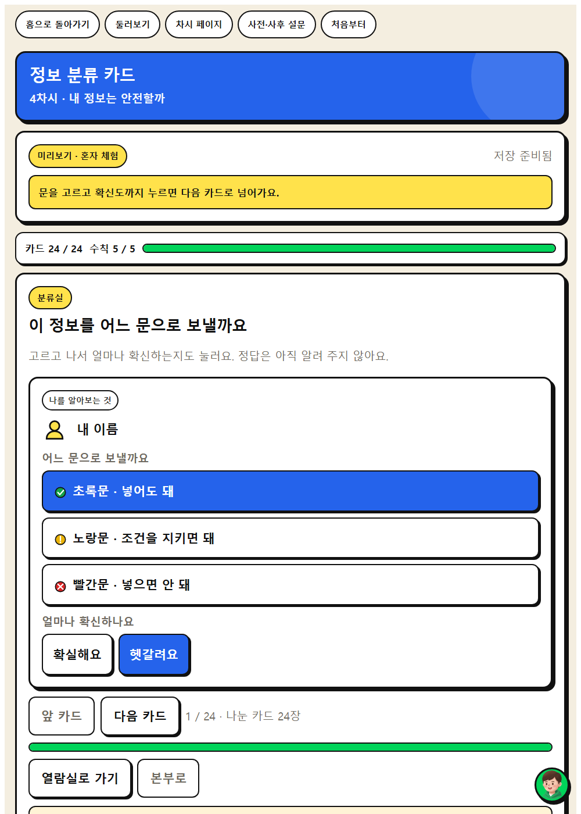

AI에 넣어도 되는 정보와 넣으면 안 되는 정보를 가려 봅시다.




| 시각 | 단계 | 시간 | 무엇을 하나 |
|---|---|---|---|
| 0분 ~ 5분 | 도입 | 5분 | 동기 유발 |
| 5분 ~ 15분 | 전개 1 | 10분 | [활동 1] 정보 분류 카드 놀이 |
| 15분 ~ 25분 | 전개 2 | 10분 | [활동 2] 왜 위험한지 근거 말하기 |
| 25분 ~ 35분 | 전개 3 | 10분 | [활동 3] 개인정보 지킴이 수칙 만들기 |
| 35분 ~ 40분 | 정리 | 5분 | 배움 정리 |
| 중점 역량 | 지식·이해 | 과정·기능 | 가치·태도 |
|---|---|---|---|
| 윤리적 사고 | 개인정보와 민감정보는 한 번 입력하면 되돌리기 어렵고, AI 서비스에는 사용 가능 연령과 학교의 기준이 있다. | AI에 입력할 정보와 입력하면 안 되는 정보를 가려내고 주의 사항 지키기 | AI의 편리함보다 옳음을 먼저 생각하려는 자세 |
| 주체성 | AI 활용 여부와 방식을 스스로 선택할 수 있는 권리가 나에게 있다. | AI 활용 전에 무엇을 넣고 무엇을 넣지 않을지 스스로 결정하기 | AI 활용에서 자기 역할을 의식하려는 자세 |
보조 역량 : 직관적 통찰
| 단계 | 학습 내용 | 교사 발문과 예상 답변 |
|---|---|---|
| 도입 5분 | 동기 유발 | 교사친구가 AI에게 ‘우리 반 ○○이랑 싸웠는데 어떡하지’라고 물었습니다. 괜찮을까요? 학생친구 이름이 들어가서 걱정됩니다. 교사한 번 넣은 정보는 다시 지울 수 있을까요? 학생지우기 어렵다고 들었습니다. |
| 학습 문제 확인 | 교사AI에 넣어도 되는 정보와 넣으면 안 되는 정보를 가려 봅시다. | |
| 준비물과 유의점 | 준비물학습문제 PPT 있으면 좋은 것상황 제시 PPT 유의할 점특정 학생의 실제 사례를 예로 들지 않기 | |
| 전개 30분 | [활동 1] 정보 분류 카드 놀이 | 웹앱 훈련장 교사카드 24장을 넣어도 되는 것, 조건을 지키면 되는 것, 넣으면 안 되는 것으로 나눠 봅시다. 학생이름과 사진, 집 주소는 넣으면 안 됩니다. 교사‘내가 쓴 글’ 카드는 어디에 놓아야 할까요? 학생내 이름이나 학교가 안 나오게 지우면 넣어도 될 것 같습니다. |
| [활동 2] 왜 위험한지 근거 말하기 | 웹앱 분류실 교사빨간 칸에 놓은 카드는 왜 위험한가요? 학생나뿐 아니라 다른 사람의 정보까지 넘어가기 때문입니다. | |
| [활동 3] 개인정보 지킴이 수칙 만들기 | 웹앱 열람실 교사모둠에서 지킬 수칙 5개를 우리 말로 정해 봅시다. 학생이름 대신 별명을 쓴다, 친구 이야기는 넣지 않는다 등을 정했습니다. | |
| 준비물과 유의점 | 준비물정보 분류 카드 24장, 웹앱 정보 분류 카드 있으면 좋은 것학교 AI 사용 안내문 유의할 점서비스별 사용 가능 연령을 함께 확인 유의할 점실제 개인정보를 활동 중에 입력하지 않도록 지도 | |
| 정리 5분 | 배움 정리 | 교사오늘 정한 수칙 중 가장 지키기 어려운 것은 무엇인가요? 학생친구 이야기를 안 하는 것이 어려울 것 같습니다. |
| 다음 차시 예고 | 교사다음 시간부터는 AI를 언제 어디까지 쓸지 우리가 정해 봅시다. | |
| 준비물과 유의점 | 준비물개인정보 지킴이 수칙 게시물 유의할 점교실에 게시하여 이후 차시에서 계속 참조 |
정보 분류 카드 · 정보 지킴이가 되어 카드 스물네 장을 나눕니다. 넣으면 안 되는 정보를 초록문으로 보내면 되돌리기 상자에 담기고, 그 상자는 열리지 않습니다. 한 번 넘어간 정보는 돌아오지 않는다는 것을 화면으로 겪습니다.
| 순서 | 화면 | 시간 | 학생이 하는 일 |
|---|---|---|---|
| 1 | 이야기 | 2분 | 정보 지킴이 본부로 출동 요청이 들어옵니다. 읽고 나서 "친구 얼굴이 나온 사진을 AI에게 넣으려 해요. 어느 문으로 보낼까요?" 보기 세 개 가운데 하나를 고릅니다. 고르면 바로 답이 나오지 않고 잠깐 뜸을 들인 뒤 벌어진 일이 열립니다. 옳고 그름을 매기지 않습니다. 교사친구 얼굴이 나온 사진을 AI에게 넣으려 해요. 어느 문으로 보낼까요? |
| 2 | 지킴이 본부 | 오늘 지나갈 방들을 한눈에 봅니다. | |
| 3 | 훈련장 | 4분 | 쉬운 카드 몇 장으로 분류 연습을 합니다. |
| 4 | 분류실 | 12분 | 카드 스물네 장을 세 칸으로 나눕니다. 정답은 보여 주지 않습니다. |
| 5 | 열람실 | 8분 | 카드가 열립니다. 넣으면 안 되는 정보를 초록문으로 보냈으면 되돌리기 상자에 담기고, 그 상자는 열리지 않습니다. |
| 6 | 조건 작성소 | 4분 | 조건을 붙이면 써도 되는 정보에 조건 한 줄을 답니다. |
| 7 | 우리 반과 견주기 | 4분 | 학급 집계를 보고 판단이 갈린 카드를 다시 이야기합니다. |
활동지에도 같은 예시가 실려 있습니다. 무엇을 쓰는지 먼저 보여 준 뒤 학생이 자기 말로 바꾸게 합니다.
| 활동지 칸 | 학생 작성 예시 |
|---|---|
| 1. 넣어도 되는 것 | 이름과 사진, 집 주소는 넣으면 안 됩니다. |
| 2. 조건을 지키면 되는 것 | 내 이름이나 학교가 안 나오게 지우면 넣어도 될 것 같습니다. |
| 3. 넣으면 안 되는 것 | 나뿐 아니라 다른 사람의 정보까지 넘어가기 때문입니다. |
| 4. 우리 모둠 개인정보 지킴이 수칙 5개 | 이름 대신 별명을 쓴다, 친구 이야기는 넣지 않는다 등을 정했습니다. |
| 이런 일이 생기면 | 이렇게 합니다 |
|---|---|
| 되돌리기 상자를 열어 달라고 한다 | 열리지 않는 것이 이 화면의 뜻입니다. 왜 못 여는지를 함께 이야기합니다. |
| 친구 정보를 넣으려 한다 | 분류실에 들어가기 전에 한 번 짚어 줍니다. 앱은 실명을 받지 않습니다. |
| 기기가 모자란다 | 모둠에 한 대만 두고 기록 담당을 정합니다. 판단은 모둠이 함께 하고 입력만 한 사람이 합니다. |
| 인터넷이 끊긴다 | 쓰던 내용은 그 기기에 남습니다. 활동지에 먼저 쓰게 하고 연결이 돌아오면 제출합니다. |
| 역량 | 잘함 | 보통 | 도움 필요 |
|---|---|---|---|
| 윤리적 사고 | 넣어도 되는 정보와 안 되는 정보를 나누고 그렇게 나눈 까닭을 댄다. | 대체로 나누지만 헷갈리는 카드에서 근거가 흔들린다. | 되돌리기 상자에 담긴 카드를 함께 보며 무엇이 문제였는지 확인한다. |
| 주체성 | 한 번 넘어간 정보는 되돌릴 수 없다는 것을 열람실 경험으로 말한다. | 조심해야 한다고는 하나 되돌릴 수 없다는 점까지 가지 않는다. | 상자가 열리지 않는 화면을 함께 보며 뜻을 확인한다. |
| 성취기준 | [6실05-05] [6도02-03] |
|---|---|
| 학생 산출물 | 개인정보 지킴이 수칙 5개 |
| 평가 방법 | 활동지 평가, 관찰 평가 |
| 수업 도구 | 정보 분류 카드(인쇄), 학교 AI 사용 안내문 |
인간중심 사고를 기르는 AI적정활용 수업 WISE · 2026년 G-DEAL A.N.D · CC BY-NC-SA